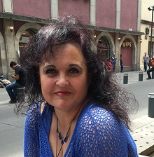
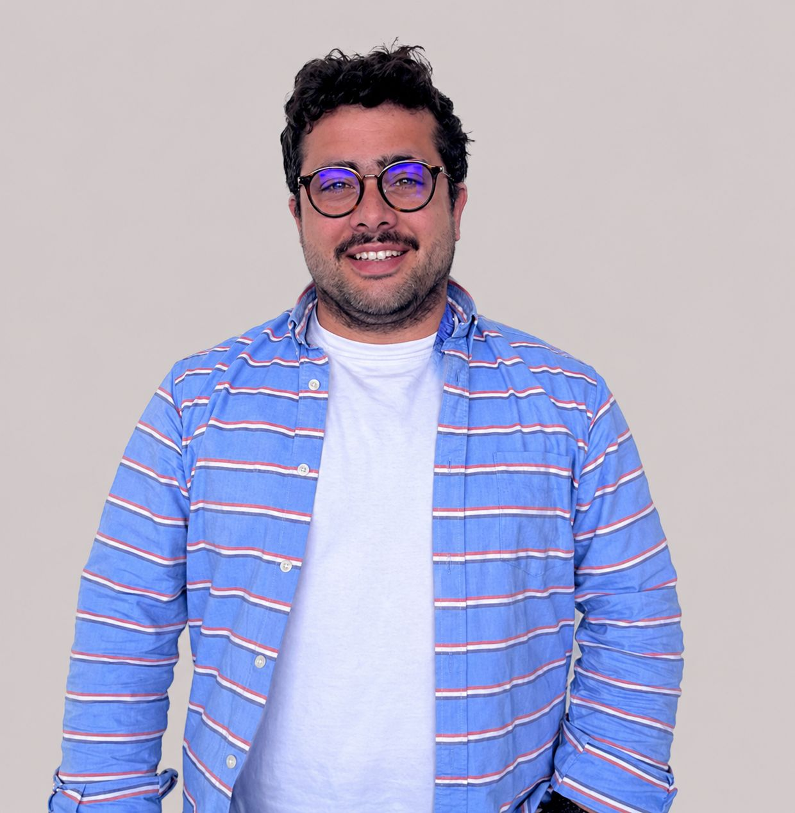
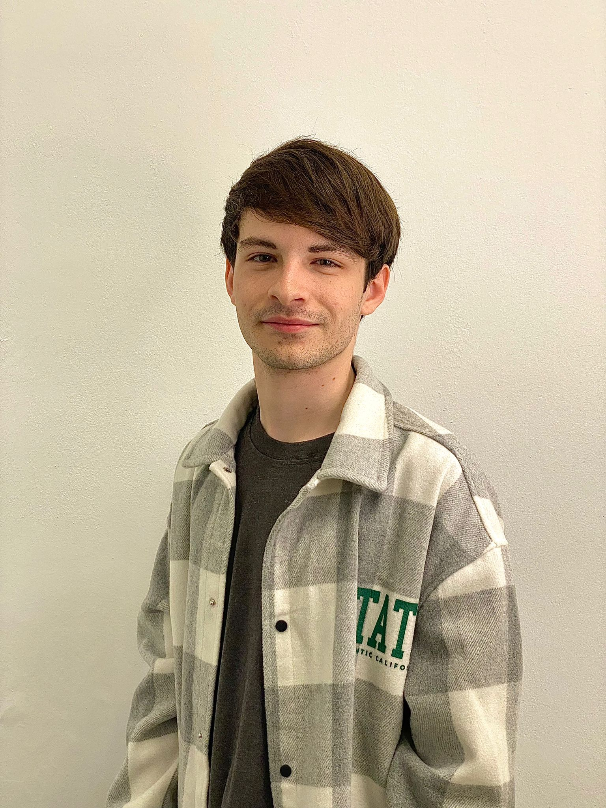
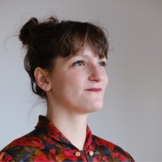
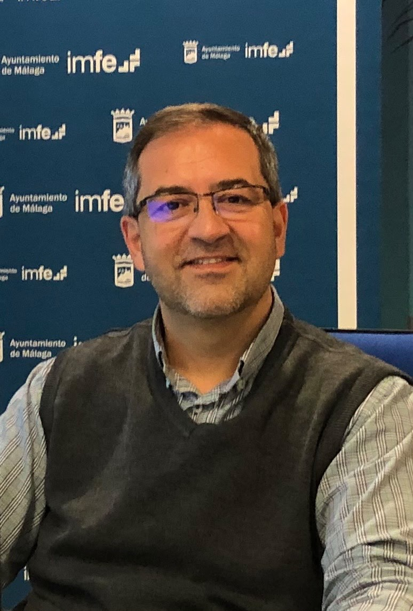
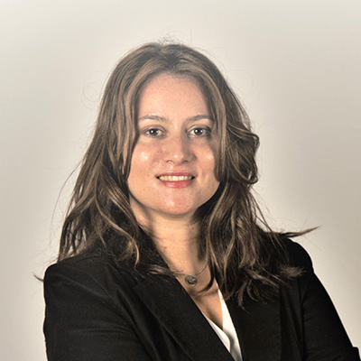
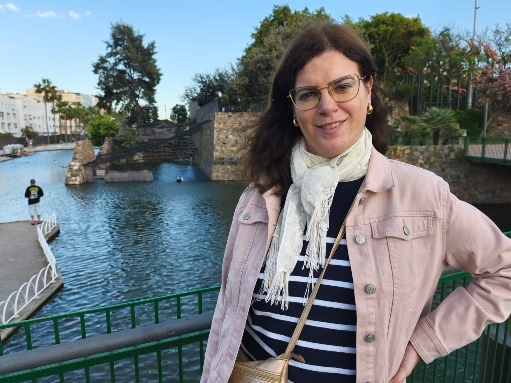
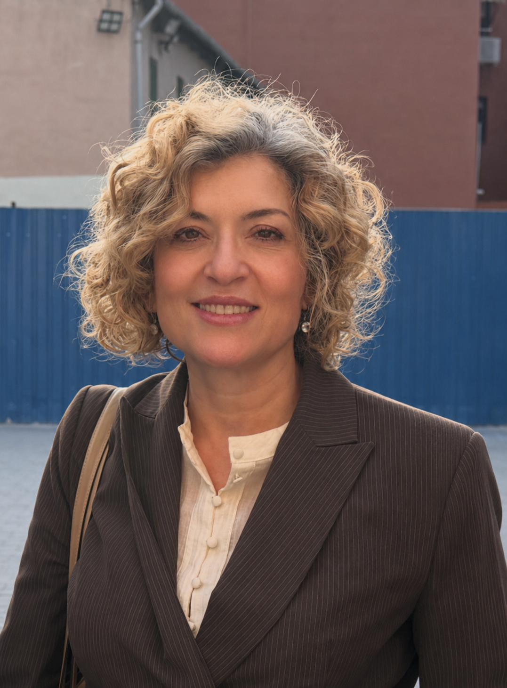
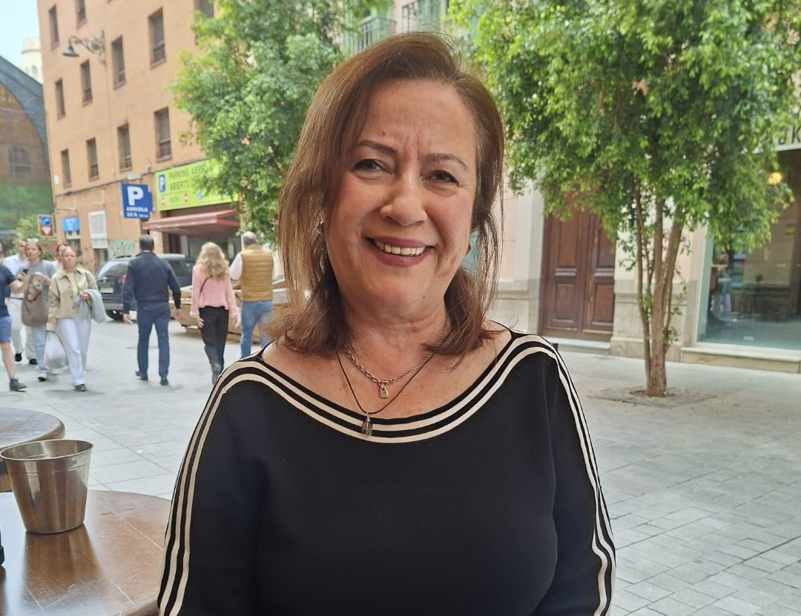
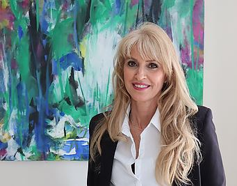

Investigación aplicada para la transformación educativa, social, artística y laboral. Pedagogía, Arte, Comunidad, Tecnología, Igualdad y Empleo al servicio de la sociedad.
Quiénes somos
«La investigación como práctica transformadora: donde la pedagogía, el arte, la tecnología y la empleabilidad generan conocimiento con impacto real.»
PRACTICE (Pedagogía Laboral, Arte, Comunidad, TIC, Igualdad y Empleo) es un grupo de investigación adscrito al área de Ciencias de la Educación de la Universidad de Málaga, impulsado por la Dra. Esther Mena.
Nace con el objetivo de promover la investigación aplicada, la innovación educativa y la transferencia de conocimiento para responder a los desafíos sociales, formativos, artísticos y laborales contemporáneos.
PRACTICE entiende la investigación como una práctica transformadora en la que la formación, el arte, la inclusión, la tecnología y la empleabilidad se articulan para generar conocimiento con impacto real en la sociedad.
Su identidad integradora —simbolizada en su nombre— refleja un ecosistema interdisciplinar orientado a soluciones innovadoras, creativas y sostenibles que acercan la universidad a la comunidad.
Un enfoque integrador
PRACTICE nace de la convicción de que los grandes retos sociales no se resuelven desde una sola disciplina. La pedagogía laboral, el arte y la creatividad, la comunidad, las tecnologías, la igualdad y el empleo no son compartimentos estancos: son dimensiones que se cruzan, se alimentan y se potencian mutuamente en la realidad de las personas.
El grupo investiga en los puntos de intersección: cómo el arte transforma la formación laboral, cómo la tecnología democratiza la participación comunitaria, cómo la igualdad es condición necesaria para el empleo digno, cómo la creatividad abre nuevas formas de inclusión que la ciencia tradicional no alcanza a ver.
Esa mirada transversal —científica, creativa, comprometida— es lo que define a PRACTICE y lo que hace única su aportación a la investigación educativa y social en la Universidad de Málaga.
Ciencia con propósito
La actividad científica de PRACTICE se estructura en torno a seis líneas estratégicas que integran desde la formación para el empleo hasta el arte, la justicia social y la innovación tecnológica.
Diseño y evaluación de programas formativos, aprendizaje permanente y desarrollo de competencias profesionales. El arte enriquece estas metodologías a través de enfoques creativos y vivenciales que potencian el aprendizaje.
Intervención socioeducativa, desarrollo comunitario e inclusión de colectivos vulnerables. El arte comunitario —murales, teatro participativo, narrativas colectivas— se convierte en herramienta de cohesión y transformación.
Metodologías artísticas aplicadas a la educación y la intervención social: arteterapia, expresión corporal, narrativas visuales, teatro social y arte digital como vías de conocimiento, comunicación y transformación.
Competencia digital, innovación tecnológica y aprendizaje híbrido. El arte digital y la creatividad tecnológica amplían las posibilidades de la educación y la comunicación para el cambio social.
Perspectiva de género, equidad y análisis de desigualdades sociolaborales. El arte feminista, la representación y la diversidad cultural enriquecen los enfoques de igualdad desde la evidencia científica.
Empleabilidad, políticas de empleo y relación universidad-sociedad. Las industrias creativas y el emprendimiento cultural abren nuevos horizontes laborales en la intersección entre arte, tecnología y comunidad.
Cómo investigamos
Combinamos enfoques cuantitativos, cualitativos y mixtos para obtener una visión rigurosa y completa de la realidad social y educativa.
Empleamos metodologías basadas en las artes (Arts-Based Research) para acceder a dimensiones de la experiencia que otros enfoques no alcanzan.
La evaluación participativa y los enfoques colaborativos con la comunidad generan conocimiento útil y directamente aplicable.
Colaboración con el entorno
Uno de los rasgos más distintivos de PRACTICE es su vocación por la transferencia del conocimiento y la colaboración con administraciones públicas, entidades sociales, asociaciones y organizaciones del tercer sector.
El grupo aspira a convertirse en un espacio de encuentro entre universidad y sociedad, favoreciendo redes de colaboración que contribuyan a mejorar la empleabilidad, la inclusión social, la creatividad y la innovación educativa desde la evidencia científica.
Si tu organización trabaja en los ámbitos de la educación, el empleo, el arte o la inclusión, estaremos encantados de explorar posibilidades de colaboración.
Contactar para colaborarLas personas detrás
Un grupo interdisciplinar comprometido con la investigación aplicada y la transformación social, artística y educativa.

EM
AS
AR
AJ
DA
EC
EI
GL
MJ
VMPonte en contacto
PRACTICE es un grupo abierto a la colaboración con instituciones, organismos públicos, entidades sociales, colectivos artísticos y empresas comprometidas con la educación, el empleo y la inclusión.
Si estás interesado en participar en proyectos conjuntos, encargarnos un estudio o conocer más sobre nuestra actividad, no dudes en escribirnos.